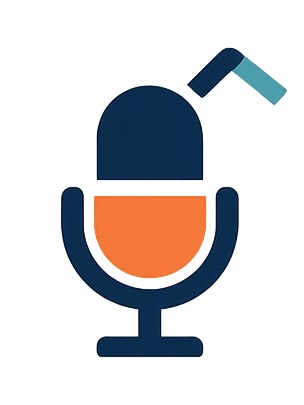

🎧 Text → Podcast
NEWSJUICE
Your daily dose of fresh, squeezed news — now as audio.
Paste or write the script
🎤 Start Recording
⏹️ Stop & Send
Create & Play
Clear
Download MP3
Pro tip: keep it concise for snappier audio.